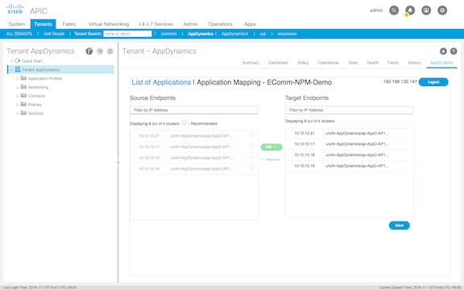
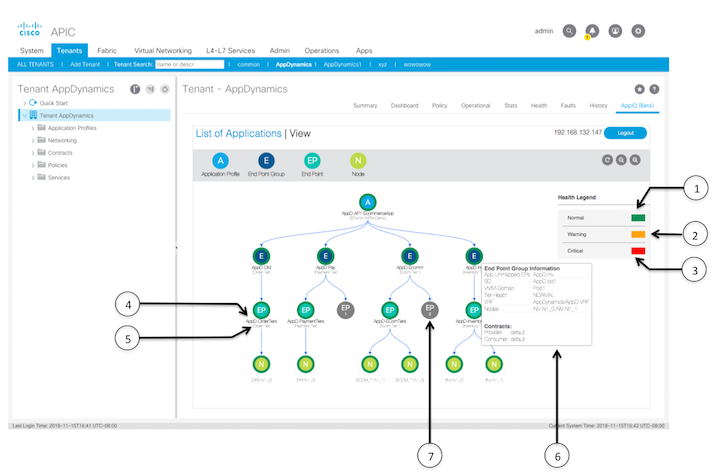

Consul
Overview
Consul and consuls work together to assist the user to map each application to a recommended APIC end point and allows the user a visual guide of the running state of those configurations.
Requirements
The following are the Consul requirements:
-
Permission level: read
-
Permissions:
-
tenant-connectivity-mgmt
-
tenant-connectivity-util
-
tenant-connectivity-l2
-
tenant-epg
-
tenant-ext-connectivity-util
-
tenant-network-profile
-
tenant-protocol-l2
-
tenant-protocol-ops
-
tenant-protocol-util
-
vmm-ep
-
vmm-connectivity
-
-
App version 1.0
-
Minimum required controller version: 2.2(1n)
-
On premise consuls controller version: 4.5.1 and above.
-
Consul integration requires consuls monitored applications to be running on this ACI fabric and the mapping of End points will only show up if the End points are present under the given Tenant.
Login
Once the Consul has been enabled, click on your consuls tenant and the Consul tab on the far left of the menu bar to login. Enter the following information:
| Property | Description |
|---|---|
|
consuls Controller |
The consuls controller IP address or Hostname. |
|
consuls Controller Port |
The running port identifier. |
|
consuls User |
The controller user name. |
|
consuls Account |
The tenant user account name. |
|
consuls User Password |
The tenant user account password. |
List of Applications
Displays the list of applications from consuls and recommends the appropriate APIC end points to deploy them on.
| Property | Description | ||
|---|---|---|---|
|
Application Name |
The consuls tenant application name. | ||
|
Health |
Displays the application statistics.
|
Mapping
Add or remove consul applications to the recommended APIC end points.
View
Use the View display to see detailed information on all the tenant EPGs within consuls:
| Number | Description |
|---|---|
|
1 - 3 |
The consuls health status. The health status color is shown as the circled color surrounding each point on the tree graph. The status can be:
|
|
4 |
The APIC EPG, EP, and node name. |
|
5 |
The consuls EPG or EP tier name. |
|
6 |
Hover over each point to see details on how the end points connect to the APIC and their contract information. |
|
7 |
Expresses the number of ACI EPs in the EPG not mapped to any consuls application. |
| Caveats | Description |
|---|---|
|
Total ACI Tenants supported |
Recommended for having consuls EPs mapped with up to 3 ACI Tenants. |
|
consuls Controller |
The Consul app can only point to 1 AppD Controller at a time. |
|
consuls User Privileges |
AppD configured user on Consul needs to have privileges to access AppD public APIs. |
|
consuls Communication Access |
The app uses https access by default. If the consuls controller communicates over http, add http://consulsControllerIP/ in the login page of Consul. |
|
ACI Communication Access |
If the https access to APIC is disabled, the app will try to communicate via http. To ensure HTTPS communication, enable HTTPS access in ACI. |